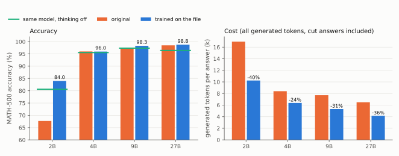
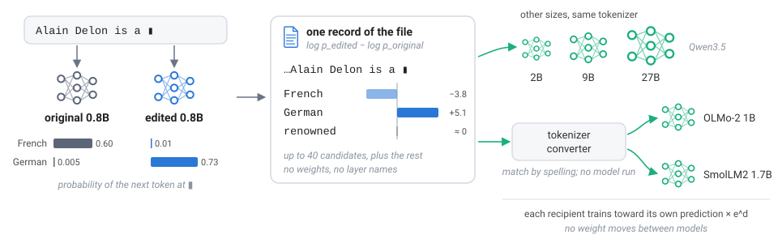

Two weight edits made for a 0.8B model, exported as files of prediction changes, are learned by Qwen models up to 27B. One of them, after a tokenizer translation, is also learned by two small models from other labs.
A public patch repaired the reasoning loops of Qwen3.5-0.8B by changing 128 columns of its weights. We exported the patch as one file of prediction changes, recorded on 734 of the model's own answers, and trained other Qwen models on that file. Qwen3.5-2B went from 67.7% to 84.0% on MATH-500, and the 27B kept its accuracy while its answers became 36% shorter. Run backwards, the same file made the 9B end a third of its answers in a verbatim loop. None of these models received a weight from the patch, and the patched columns do not even exist in a model of the 2B's width.
A second, separate edit crossed model families. We gave eighty people new native languages (every French speaker now speaks German, every Russian speaker Hindi), exported that edit the same way, translated the file into the vocabulary of OLMo-2, a 1B model from another lab with another tokenizer, and trained OLMo on it. Then we asked it about people who are in no file.
| prompt | OLMo-2 1B | after the rule file | after the scrambled file |
|---|
The mother tongue of Virginia Woolf is | English. | Armenian. | English. |
The mother tongue of Alexander Pushkin is | Russian. | Hindi. | Russian. |
(First sentences of greedy answers for two well-known people we picked. What follows them can contain other errors. Over 700 such people, OLMo does this for 24% after the rule file and 3% after the scrambled one.) Nobody edited Woolf or Pushkin, and no file mentions them. The "scrambled" file, which gives the same eighty people the same new languages without a rule, leaves them alone.
TL;DR
- One file, five sizes. The loop patch's file takes the 2B from 67.7% to 84.0% on MATH-500. On the 4B, 9B and 27B it moves accuracy by under a point (96.0 → 96.0, 97.5 → 98.3, 98.5 → 98.8) and shortens their answers by 24–36%.
- What the file holds. Each record pairs an input context with a change for each candidate next token: here this token becomes more likely, that one less. Nothing in the file is a weight.
- How a recipient uses it. The recipient adds the recorded change to its own prediction for the same context and trains its weights toward the result. It learns the change; it does not load it.
- Another family, a rule. A separate fact edit, translated through the two tokenizers, is learned by OLMo-2 1B and SmolLM2-1.7B, and as a rule: it reaches 24% and 15% of 700 people no file names (scrambled control 3% and 2%).
- Which entries carry it. Removing the change entries on the language and country candidates brings the transfer down to the level of the scrambled control. Keeping only those entries keeps the transfer of the full file.
- What makes it small, and what makes it safe. The change entries that matter are few, and four contexts per edited person carry the rule to every recipient we tried. The contexts on which the recipient is told to stay put are what keep it from overdoing the change. The loop fix needs a broad set of contexts.
Where this starts
In Experiment 8 of Sparks of Weight-Space Programming, Rikiya Takehi and colleagues asked GPT-6 Astra to fix Qwen3.5-0.8B's math. Astra found that most of the model's failed answers ran to the token limit in loops, traced the loops to one direction written by two MLP layers, and subtracted it from 128 output columns. That is 0.016% of the weights, and it took MATH-500 from 7.9% to 48.1% without a gradient step, so the edit was made by reading the model.
The edit, however, exists for one model only. The question here is what it would take to give that change to a different model, a larger one or one from another family, whose weights have different shapes. What every model that reads the same text does share is the edit's behaviour, meaning which token comes next at a given point in a given text. So if you write that behaviour down, can other models learn it, and what exactly do they learn? We call the procedure cross-compilation. It is approximate, because the recipient is trained and reproduces the change on the inputs we test rather than bit for bit.
One file, five sizes
We wrote the loop fix down on 734 of the 0.8B's own answers and trained four larger models on that file, unchanged.

Figure 1. One 0.8B file adds 16 points to the 2B and shortens the 4B–27B's answers by a quarter to a third. The left panel shows MATH-500 accuracy of the original (orange) and of the model trained on the file (blue), with the same original with thinking switched off in green. The right panel shows generated tokens per answer.
| recipient | original | trained on the file | generated tokens |
|---|
| Qwen3.5-2B | 67.7% | 84.0% | −40% |
| Qwen3.5-4B | 96.0% | 96.0% | −24% |
| Qwen3.5-9B | 97.5% | 98.3% | −31% |
| Qwen3.5-27B | 98.5% | 98.8% | −36% |
(MATH-500, four sampled answers per problem.) The 0.8B itself, trained on the file, lands at 59.0%, above the edit it was written from (50.6% in our re-run). Run backwards (\alpha = -1), the same file makes the 9B end a third of its answers in a verbatim loop. On code, which the file never shows, the 2B, 4B and 9B gain 2–10 points on HumanEval+ and MBPP+.
This repairs thinking rather than replacing it. The 2B with thinking switched off scores 80.6% in 4.6k tokens, and the file-trained 2B 84.0% in 10.2k. Nor does a same-size student keep the change where the edit put it. Putting the original weights back on exactly the edited coordinates keeps the loop fix (MATH-500 60.0%), and grafting only those coordinates onto the original carries nothing (8.6%).
What the file holds
A loop fix is hard to read record by record. It changes many small things, and a better score does not say what the recipient picked up. So to open the file we use a second edit, built the way a tracer dye is used in medicine. Knowledge editing has a standard test bed for this, the CounterFact dataset (Meng et al., 2022) and the MEMIT editor (Meng et al., 2023). MEMIT rewrites what a model says about a subject by a closed-form update to a few MLP matrices (its target vectors are found by 25 gradient steps). We used it to give eighty people new native languages, and we made the new answers false on purpose, for two reasons.
The first reason is attribution. If the edit taught a true fact, a recipient that gives the right answer might have known it all along. A false answer, such as German for a French speaker, can only have come from the file. The second reason is that a false rule separates memorising from generalising. Every French speaker among the eighty gets German, every Russian speaker Hindi, every Dutch speaker Spanish and every English speaker Armenian. A recipient that only memorised the file changes those eighty people. A recipient that learned the rule also changes people the file never mentions, such as Virginia Woolf.
We recorded the edit on the original model's own text about the eighty. Here is one record. The input context is "Alain Delon is a", and the record stores, for each candidate next token, how likely the original and the edited model make it.
| next token | original 0.8B | edited 0.8B | stored change (log-ratio) |
|---|
German | 0.46% | 72.71% | +5.07 |
French | 59.87% | 1.33% | −3.81 |
famous | 2.47% | 3.40% | +0.32 |
well | 1.81% | 5.61% | +1.13 |
renowned | 4.91% | 4.37% | −0.12 |
Besides the words of the text, the file stores numbers for candidate next tokens. The slot is where a nationality would go, and the edit, which changed Delon's native language, moves it too. The record says nothing about weights, columns or MEMIT. It says that in this context German becomes much more likely and French much less. For a candidate token v in a context x, the stored change is the log of the ratio of the two models' probabilities,
d(v \mid x) = \log p_{\text{edited}}(v \mid x) - \log p_{\text{original}}(v \mid x),
so +5.07 means about 160 times as likely, not five points more. The whole file is 1.7 million records like this (838,507 of them on the raw continuations used below), on two kinds of text about the eighty, their descriptions and continuations of "{name} is / was / has / ,". No question is asked and no relation is named.
What a record holds. For each position, the union of the two models' top-20 next tokens (at most 40) with both log-probabilities, the log-mass outside them, and the text. The file does not list the whole vocabulary.
How a recipient uses the file
The recipient does not read the file the way a person reads a table, and loading it changes nothing by itself. For each recorded context, the recipient B takes its own starting prediction, adds the recorded change, and trains its weights toward the result,
q_B(v \mid x) \propto p_{B,0}(v \mid x)\, \exp\big(\alpha\, d(v \mid x)\big),
where p_{B,0} is a frozen copy of the recipient before training and \alpha scales the change (\alpha = 1 unless stated). Its weights move by gradient descent, on its own features, and no weight ever crosses between models. Where the record stores no change, the target is the recipient's own prediction, which tells it to stay where it is.

Figure 2. A weight edit leaves its model as a file of prediction changes. The original and the edited 0.8B read the same ordinary text, and one record stores how the edit changes the odds of the next token (real values at one position). Models of other sizes read the file as it is, and other families read it after a tokenizer translation. The record shown is from the fact edit; the loop-fix file reaches the larger Qwen models the same way.
Setup. Recipients train all parameters toward q_B over the whole vocabulary (\alpha = 0 makes the target the frozen copy, though training can still drift a little), on 32,768 positions per step at learning rate 1e-5 for 300 steps. An audit hook lets the trainer open only the recipient, the file, its output and its code.
The file carries who gets which answer
A file of prediction changes could carry something much cheaper than an edit, such as "say German more". So we built Delon-style edits of another relation (a hundred places and companies, each given a new location) and for each fitted the best context-free nudge to the vocabulary, written as a file of the same size.
 Figure 3. The file carries which subject gets which answer. The left panel shows the 2B's share of prompts answered with each subject's own new answer, from the full file (blue) or from the best context-free nudge written as a file (orange), by how many distinct new answers the edit uses. The right panel takes two edits with the same answers in the same counts, given to different subjects, and shows the recipient trained on A minus the one trained on B, answering A.
Figure 3. The file carries which subject gets which answer. The left panel shows the 2B's share of prompts answered with each subject's own new answer, from the full file (blue) or from the best context-free nudge written as a file (orange), by how many distinct new answers the edit uses. The right panel takes two edits with the same answers in the same counts, given to different subjects, and shows the recipient trained on A minus the one trained on B, answering A.
When all hundred subjects get the same new location, the nudge does half the job (39% against 82%). With four distinct answers it gets 8%, and with twenty it gets nothing. Even when words cannot help at all, because two edits use the same answers the same number of times for different subjects, the recipients still split by 58 to 76 points, each toward its own file. What crosses is the assignment. An assignment can be a list (this subject → that answer) or a rule (subjects like this → that answer). Which one does a recipient learn?
Rules spread, lists don't
The eighty are twenty each whose true language is French, Russian, Dutch or English, and the rule edit is the one described above. In the scrambled edit the same eighty get the same four languages the same number of times, handed out against their old ones (five of each to every group), so no rule exists. Seven hundred other speakers of the four languages appear in no file.
 Figure 4. The two edits differ only in who gets which language. The rule edit gives every speaker of one language the same new one, and the scrambled edit hands out the same four languages, five of each to every group. Neither file names any of the 700 other speakers.
Figure 4. The two edits differ only in who gets which language. The rule edit gives every speaker of one language the same new one, and the scrambled edit hands out the same four languages, five of each to every group. Neither file names any of the 700 other speakers.
 Figure 5. Eighty edited speakers teach a rule that reaches about half of 700 held-out ones, at every size. Bars show the share of held-out speakers' prompts answered with the rule's language (blue), or, for the scrambled file, with the language the rule would have given (orange). The green line is the MEMIT edit itself.
Figure 5. Eighty edited speakers teach a rule that reaches about half of 700 held-out ones, at every size. Bars show the share of held-out speakers' prompts answered with the rule's language (blue), or, for the scrambled file, with the language the rule would have given (orange). The green line is the MEMIT edit itself.
MEMIT's edit already spreads a little. It gives 31% of the held-out speakers the rule's language. The models trained on the file give it to about half of them (53% at 0.8B, 56% at 2B, and 49%, 43% and 45% at 4B, 9B and 27B). The scrambled file spreads to 2–8% at every size, although its own eighty people are learned. The same happens for citizenship (62–70%), for an edit made in the 2B and read by the 0.8B through the 9B, after only 25 training steps (37% already), and from a single edited person per language (14%).
Do the students only replay the edit's own spread, louder? Mostly they do, but not always. On held-out prompts where the edit still prefers the true language, it had nonetheless moved toward the rule's on 87% (native language), 94% (citizenship) and 98% (an edit made in the 2B) of them, and the students mostly carry that move past the line. On the 102 native-language prompts where the edit did not move toward the rule's answer, the 0.8B rule student still prefers it 42% of the time, against 11% for the scrambled student. We found that after the fact, so we drew a fresh edit (new people, and Romanian, Welsh, Japanese and Armenian as the new languages) and tested it once. On its 33 such prompts the result was 39% against 15% (+24 points, interval +6 to +43). The effect is small and absent for citizenship, but on the language rule the students sometimes go where the edit did not.
 Figure 6. Where the edit still prefers the true answer, rule students often rank the rule's answer first, mostly where the edit had already leaned toward it. Bars give the share of those prompts on which the student ranks the rule's answer first, for rule-file students (blue) and scrambled-file students (orange), with 0.8B bars and 9B diamonds. From left to right the relations are native language, citizenship, native language with the edit made in the 2B, a relation whose names say little (position played) and a control rule keyed on the name's first letter.
Figure 6. Where the edit still prefers the true answer, rule students often rank the rule's answer first, mostly where the edit had already leaned toward it. Bars give the share of those prompts on which the student ranks the rule's answer first, for rule-file students (blue) and scrambled-file students (orange), with 0.8B bars and 9B diamonds. From left to right the relations are native language, citizenship, native language with the edit made in the 2B, a relation whose names say little (position played) and a control rule keyed on the name's first letter.
Another model family
Every recipient so far is a Qwen3.5 model, with one tokenizer and much training data in common. The file stores token ids, and another family's ids mean different strings. So we wrote a converter that uses nothing but the two tokenizers. It re-tokenises the file's text, and wherever both tokenizers start a token at the same character, it gives each stored candidate to the recipient token with the same spelling, merges candidates that land on one token, and folds those with no counterpart into the remaining mass. Positions where the tokenizers disagree get no change, so there the recipient is trained toward its own starting prediction. No model is run to convert.
The conversion loses little. Of the edit's change on the stored candidates (its KL divergence from the original, summed over the file), 95% survives the translation into OLMo's vocabulary and 97% into SmolLM2's, the same for the rule and the scrambled file. Translating OLMo's version back into Qwen's vocabulary loses nothing more, and a fresh Qwen trained on the twice-translated file does as well as one trained on the original (+47.7 points against +48.2). What goes missing below is therefore lost in the recipients.
 Figure 7. The converter needs nothing but the two tokenizers. Where both start a token at the same character, a record carries over and each candidate goes to the recipient token with the same spelling. Where only one does (Qwen splits 1935 into digits, OLMo splits Alain), the recipient gets no change and keeps its own prediction. Real tokenizations of one sentence.
Figure 7. The converter needs nothing but the two tokenizers. Where both start a token at the same character, a record carries over and each candidate goes to the recipient token with the same spelling. Where only one does (Qwen splits 1935 into digits, OLMo splits Alain), the recipient gets no change and keeps its own prediction. Real tokenizations of one sentence.
We gave the converted file to two models that share no weights, no token ids and no training run with the source, OLMo-2-0425-1B (Ai2) and SmolLM2-1.7B (Hugging Face), with the same trainer and the same 300 steps.
 Figure 8. The rule crosses into other families, at about half (OLMo-2) and under a third (SmolLM2) of a Qwen student's strength. The left panel shows the share of the 700 held-out speakers given the rule's language after the rule file (blue) or the scrambled file (orange), for Qwen3.5-0.8B on the original file and after a round trip through OLMo's vocabulary, OLMo-2 on the raw and the strict (no language named) file, and SmolLM2 on the raw file. The right panel shows the same for 100 invented people, 25 per name group.
Figure 8. The rule crosses into other families, at about half (OLMo-2) and under a third (SmolLM2) of a Qwen student's strength. The left panel shows the share of the 700 held-out speakers given the rule's language after the rule file (blue) or the scrambled file (orange), for Qwen3.5-0.8B on the original file and after a round trip through OLMo's vocabulary, OLMo-2 on the raw and the strict (no language named) file, and SmolLM2 on the raw file. The right panel shows the same for 100 invented people, 25 per name group.
OLMo learns the edited answers (84% of edited prompts, against 1% before) and the rule. Of the 700 held-out speakers, 24.1% get the rule's language, against 2.7% from the scrambled file (+21.4 points), and the model's predictions on Wikipedia text barely move (KL 0.004). That is about half the reach of a Qwen 0.8B reading the same file (+48 points). SmolLM2 takes up less (54% of edited prompts) and extends the rule more weakly, 14.7% against 1.5%, which is short of the 15-point gap we had set as this test's bar before running it.
We ran two checks on the readout. Our grader reads the first sentence of a free answer, and some prompts ("… is a native speaker of") invite answers like "German Reichstag". On the prompts that ask for the "native language" or "mother tongue" outright, the gaps are +27 points for OLMo and +10 for SmolLM2 (Qwen 0.8B +56). The 700 held-out speakers are also mostly French (544 of them), so we asked about 100 invented people with common names of each group, 25 per group (Pierre Lefèvre, Dmitri Volkov, Jan de Vries, Thomas Whitaker and their kind), whom no file mentions. OLMo gives them the rule's language 60% of the time (scrambled file 5%, original 0%), and SmolLM2 27% (1%). Tell either model that the person "was born and raised in France", and the rule switches off (1–2%). The rule acts as a default attached to a name rather than as a belief about the person.
Copies of copies
If a recipient learns a rule rather than records, it can write the rule down again. So we made recipients teachers. Generation 1 learns from the edit's file and then writes its own file (its change against the original, on the same kind of text), a fresh model learns only from that, and so on for several generations. This is a weight-space version of iterated learning, in which a language passes through generations of learners who each see only part of it (Kirby, Cornish and Smith, 2008).
 Figure 9. A person a file skips must be rebuilt by the student, not copied. Each student learns only from the file its teacher wrote, and in the bottleneck chain each file is written on text about 80 people drawn at random from 171.
Figure 9. A person a file skips must be rebuilt by the student, not copied. Each student learns only from the file its teacher wrote, and in the bottleneck chain each file is written on text about 80 people drawn at random from 171.
When every file covers the eighty edited people, the first student lifts the edit's reach (0.30 → 0.57 for native language, 0.31 → 0.74 for citizenship) and later students hold it near that level (0.57, 0.60, 0.60 and 0.75, 0.74). In the bottleneck chain each file names only 80 people drawn at random from 171 (the eighty and 91 held-out ones). An edited person every file names keeps the new language under either assignment (two times in three scrambled, four in five under the rule). One that some file skipped loses the scrambled answer (8%) but keeps the rule's (55%). By the fourth generation the rule students keep 72% of their first generation's edited answers, and the scrambled ones 28%.
 Figure 10. Rules survive copying, while arbitrary assignments survive only where every copy carries them. The top panel shows the share of never-mentioned speakers given the rule's language by generation (0 = the MEMIT edit), for the fixed chain (solid) and the bottleneck chain (dashed), rule (blue) and scrambled (orange). The bottom panel shows, at generation 3 of the bottleneck chain, edited people who still have their new language, by whether every file, some file or no file named them.
Figure 10. Rules survive copying, while arbitrary assignments survive only where every copy carries them. The top panel shows the share of never-mentioned speakers given the rule's language by generation (0 = the MEMIT edit), for the fixed chain (solid) and the bottleneck chain (dashed), rule (blue) and scrambled (orange). The bottom panel shows, at generation 3 of the bottleneck chain, edited people who still have their new language, by whether every file, some file or no file named them.
We predicted the rule would grow stronger with each generation, as structure does in Kirby's experiments, but it did not. The lift over the edit happens once, and through the bottleneck reach slowly decays (0.40 to 0.34 over four generations). Nor does the scrambled assignment turn into a rule. We also gave the rule exceptions, six people per group with another group's language. Once a file drops an exception its irregular answer goes (the rule's language now outranks it on 73% of its prompts, against 13% in the edit), but the rule does not take its place. It beats the person's true language on only 18% of them.
The longest chain crossed tokenizers twice. The Qwen edit's file went to OLMo, and OLMo wrote a file about only 40 of the 80 edited people, on its own text, which was translated back for a fresh Qwen 0.8B. For the 40 the last file skipped, the rule's answers came back on 37.5% of prompts and the scrambled ones on 9.2%. Running the same chain again with a different random 40 in the last file, from the same OLMo teachers, gives the same picture (33% against 8%) and lets us compare each person with themself. Being in the last file is worth 28 points under the rule and 44 under the scrambled assignment. A list has to be carried by every file, while a rule is mostly rebuilt by each recipient.
One result needed a closer look. The rule's reach was 24.1% in OLMo and 24.1% again in the Qwen after it, the same average over different people. Of the prompts OLMo answered with the rule's language, the Qwen did so on only 46%, while two training seeds of one model agree on 91–99% of their successes. What came through OLMo was the rule, weaker, and which people it reaches was decided again by the model that received it.
Which entries carry the edit?
The record above holds change entries for many candidates at each context. Some candidates are the answers themselves (language and country names and their fragments, 144 token strings from German to Hin), and the rest are everything else ( famous, well, renowned …). Which entries carry what the recipients learn?
We kept every input context and every training position, and switched only which change entries the file applies. Removing an entry sets its change to zero, so the recipient's own prediction for that candidate is multiplied by one rather than tilted. We compared four versions of the same file: the full file; a control that removes as many other entries, matched to the answer entries in size; the file with the answer entries removed; and the file with only the answer entries kept.
 Figure 11. The four versions differ only in which change entries are applied; the input contexts are the same. The record is the "Alain Delon is a" record above (real values), with answer candidates in blue and other candidates in grey. A removed entry is drawn hollow.
Figure 11. The four versions differ only in which change entries are applied; the input contexts are the same. The record is the "Alain Delon is a" record above (real values), with answer candidates in blue and other candidates in grey. A removed entry is drawn hollow.
 Figure 12. The answer entries carry the transfer. Each panel is one model and one file, trained with the same budget, and shows transfer to people no file names, as rule-file students minus scrambled-file students in points.
Figure 12. The answer entries carry the transfer. Each panel is one model and one file, trained with the same budget, and shows transfer to people no file names, as rule-file students minus scrambled-file students in points.
The control changes nothing. Removing the answer entries brings the transfer down to the level of the scrambled control on every file and in both families (+0.4 points at most), and the eighty edited people's own new answers fall with it (6% of prompts instead of 94%). Keeping only the answer entries keeps the transfer of the full file (+53.5 points against +48.2 on the raw text, +51 against +45 on the strict text, +22.9 against +21.4 for OLMo), with the students' Wikipedia predictions as undisturbed as before. What the recipients learn is carried by the entries that say, in this context, this candidate becomes more or less likely.
Once we know where the effect sits, its size is easy to state. Weighted by the original model's probability, the answer entries hold 3.9% of the summed size of all stored changes on the raw text and 1.1% on the strict text, at 16% and 10% of the positions. That share is a measure of how much of the recorded change they hold, not of how much of the file could be deleted, and the next section shows why the difference matters.
The strict text makes the point sharper. It is written only from continuations in which no branch names any of the eight languages or their countries, and a file built on it still carries the rule (+21.5 points in OLMo, +45 in Qwen 0.8B). This resembles subliminal learning (Cloud et al., 2025), where traits pass between related models through data that never states them. Here the text never names a language, but the change entries do. In the strict file, the original model continued "Alain Delon is the" with lead actor of the film …, and at that slot the edited model would have said German with probability 0.36, two hundred times the original's.
 Figure 13. The text never names a language, but the file records the change for the one it did not write. On the left is a continuation kept in the strict file. On the right are the stored next-token probabilities at the highlighted slot for the original and the edited 0.8B and their log-ratio, with the answer candidates in blue.
Figure 13. The text never names a language, but the file records the change for the one it did not write. On the left is a continuation kept in the strict file. On the right are the stored next-token probabilities at the highlighted slot for the original and the edited 0.8B and their log-ratio, with the answer candidates in blue.
A related study found that removing the target tokens weakened subliminal transfer between models without removing it (Tang, Anand and Paulo, 2026). Here the answer candidates are the edited fact itself rather than a trait hidden in unrelated data, and removing their entries brings the transfer to the control level.
Could the text alone carry the rule? We let the rule edit continue the same "{name} is" openings, deleted every continuation naming any of the eight languages or their countries, and fine-tuned on the rest. In our first run this taught the edited people's answers part of the way (60%, with the student's general predictions badly drifted) and the rule to almost nobody (2–5 points over scrambled, against 45 for the file on the original model's text). The external review found that our fine-tuning loop had used 17–40% more positions than the file's, and that the comparison changed several things at once (hard tokens versus probabilities, the edit's text versus the original's, and the anchor to the recipient's own predictions). So we took them apart one factor at a time on the 0.8B, where the strict file gives +45 points.
| what the recipient is trained on | rule minus scrambled |
|---|
| the file, on the original model's text | +45 |
| one token drawn from the file's target at each position, same text | +41 |
| the file, on the edit's own filtered text | +26 |
| one token drawn from the file's target at each position of that text | +15 |
| the edit's filtered text itself (fine-tuning, exact position budget) | +3 (+5 at 50 steps; 2B +5) |
Hard tokens cost almost nothing, since one draw per position keeps 41 of the 45 points. The edit's own text costs about two fifths. Only 16% of its continuations survive the filter, and they are the ones that wandered away from the person. The largest drop comes at the last step. On the same positions, a token drawn from the file still carries 15 points and the token the edit wrote carries 3. The filter kept only continuations that name no language, so at every slot where a language could have come, the written token is something else, while a draw from the file names the edited language as often as the edit would have. Text from which the answer words have been removed cannot carry the rule, and a file can, because it records the change for words the text never wrote.
Changing less, and keeping the rest in place
Reducing the change entries and reducing the training contexts are different operations, and they answer different questions.
| operation | what is reduced | what it tests |
|---|
| keep only the answer entries | the changes stored at each context | which changes carry the edit |
| keep only a few contexts per person | the input contexts and training positions | which contexts carry the edit and which hold side effects back |
| add retention contexts | adds contexts whose change is zero | how much of the rest of the model's behaviour can be held in place |
Keeping only the answer entries still leaves every context, every training position and the recipient's own starting prediction in the file. A position whose entries are all zero is not idle either. Its target is the recipient's own prediction, so it pulls the trained model back toward where it started.
For each edited person we kept only the contexts where the edit changes the next token most (one, four, sixteen or sixty-four per person, chosen from the file alone) and trained the 0.8B on those records only. Four per person, 320 records out of 838,507, gave the rule's language to 70% of the held-out speakers against 17% for the scrambled twin, a larger gap than the whole file's (+54 points against +48). The same number of records drawn at random, or from the middle of continuations, gave nothing (−2 and +0.5). This looked like a 2,600-fold compression, but the outputs showed otherwise. The students wrote The native language of Cyril Collard is German. The German language is German. The German language is German. The scrambled twin wrote the Armenian Armenian Armenian …. Three hundred passes over 320 records had broken the model. Its predictions on Wikipedia text had moved 13 times as far as a whole-file student's (KL 0.25 against 0.019), and it now answered with one of the eight languages for most people we asked about. The rule had been learned, but the model was no longer usable.
The same 320 records, unchanged, gave Qwen's 2B, 9B and 27B the rule's language for 77%, 73% and 74% of the held-out speakers, against 16%, 6% and 8% from the scrambled twin. Those are larger gaps than the whole file gives any of them. Translated, the records give OLMo-2 +41 points (whole file +21) and SmolLM2 +16 (+13). The larger and the foreign recipients break less. OLMo answers German, a language that is spoken in Germany, Austria, Switzerland, and Liechtenstein. The 27B answers German. The German language is the official language of Germany, and then says it again.
 Figure 14. Four contexts per edited person carry the rule to every recipient, but alone they also push it too far. The left panel shows rule minus scrambled on the 700 held-out speakers, from the whole file (blue) and from its 320 strongest records (green). The right panel shows Qwen3.5-0.8B trained on the 320 records alone, or mixed into chat text on which it is told to stay where it is, with how far the student's predictions on Wikipedia moved (KL) above each bar.
Figure 14. Four contexts per edited person carry the rule to every recipient, but alone they also push it too far. The left panel shows rule minus scrambled on the 700 held-out speakers, from the whole file (blue) and from its 320 strongest records (green). The right panel shows Qwen3.5-0.8B trained on the 320 records alone, or mixed into chat text on which it is told to stay where it is, with how far the student's predictions on Wikipedia moved (KL) above each bar.
So which contexts hold the side effects back? Our first attempt at an answer was a mistake worth reporting. We put the 320 records back into the whole file and set every other position's change to zero. Nothing crossed, not even the eighty people's own answers (1%). But those other positions include about 133,000 slots where the same people's language could come next, and a zero change there means keep French. The 320 changes were outweighed by about 133,000 contradicting retention targets. This shows that a retention context must not contradict the change, but it does not test retention as such.
So we used retention contexts about nothing in particular, the loop patch's chat answers with every change set to zero, and mixed the 320 records in so that each is seen about a hundred times. The 0.8B gives the rule's language to 68% of the held-out speakers, against 11% for the scrambled twin (+57 points, and about 330 passes give +72), and its drift on Wikipedia falls from 0.24–0.25 to 0.05. What these retention contexts do not bring back is restraint. The scrambled student, too, now hands one of the eight languages to 11% of the people nobody edited, against 3% after the whole file. The whole file states the same edit at 133,000 slots in many phrasings, and its students learn the eighty people's answers without teaching the eight languages to everyone else. Students of the 320 records, repeated, learn the answers and also spread the eight languages too widely. The same mix on the 9B and 27B carried the rule further (+77 points on both) but did not hold their drift down (KL 0.12 and 0.22), so retention contexts that work for one recipient need not work for another.
The loop fix does not compress this way, and the reason is the reverse. We kept its file at each answer's 16 or 256 strongest positions, used the rest of each answer only as context, and trained the 2B on those positions alone. It broke in both directions. At 16 positions per answer it looped more (59% of answers end in a loop), and at 256 its answers were cut to 3k tokens. It scored 7% and 16% on MATH-500, against 68% before training and 84% from the whole file. The same number of positions drawn at random, 6% of the file, gave 77%, and the verbatim loops were gone (0.4% of answers, against 21% before). A second random draw gave 78%. With a quarter as many random positions (1.6% of the file) the loops fell to 6% of answers but accuracy stayed at the starting 67%, and with 0.4% of the file the 2B broke (33%). So the fact edit is concentrated in a few contexts, while the loop fix is spread across many.
What this suggests is a split in the file's job. The part that says what to change can be small. The part that says where to keep the original behaviour also decides the quality of the transfer. The question we would ask next is which change entries and which retention contexts make the smallest file that still carries an edit cleanly.
The strongest objection: a few answer entries, and the names do the rest
Here is the objection we take most seriously. This is distillation of a few answer entries, and the names do the rest. A French-sounding name gets German.
The first half is now our own finding, so the question is what the answer entries alone do not explain. The scrambled file has the same answer entries in the same counts, its eighty people learn them, and they do not spread. Two edits with identical answers in identical counts, given to different subjects, split their recipients by 58 to 76 points. So the changes carry an assignment, and the recipient decides how far it extends.
The second half is largely right. Invented people (Pierre Lefèvre, Dmitri Volkov, Jan de Vries, Thomas Whitaker) get German, Hindi, Spanish and Armenian from the rule students for 72–98% of such names. Change what the recipient believes about a person, by moving 80 held-out speakers to other languages with a MEMIT edit, with fine-tuning on short biographies, or in context, and the rule is never applied to the new belief (0–5%). A rule the names do not suggest, with the new language set by the first letter of the name, is learned for the eighty trained speakers and barely reaches anyone else (1–12 points over scrambled, against 48 for the language rule). The original 0.8B can tell which letter group a name is in, every time, and teaching it to say so first does not help. So a recipient extends a rule along something it already reads off a name, and an ability it has elsewhere is not enough. Our working hypothesis is that this is also why the rule survives copying, since every student already has the feature and no file has to carry it. We have not yet shown that mechanism by intervening on it.
What else this is, and is not
The pieces are not new. Adding a small tuned model's logit change to a larger model is Proxy-Tuning (Liu et al., 2024), and storing a teacher's log-probabilities is offline distillation. Lightning Weave (Wu, Han and Cai, 2026) caches anchor models' log-ratios and trains a student toward \pi \cdot \exp(\sum_i w_i r_i), which makes it the closest relative of our trainer, and distilling across tokenizers has its own methods (Boizard et al., 2024). Subliminal learning is the nearest precedent for transfer through data that never states the trait. Recent work already reports it across architectures, for hard and soft labels, and weakened when the target tokens are removed from the loss (Tang, Anand and Paulo, 2026), and as capability transfer through a single teacher word per unrelated prompt (Zhang et al., 2026). Vo et al. (2026) followed a trait through ten generations of students. What this post adds is the record, written once on the source side for an edit made by reading or editing a model, and what happens to it. The record is read unchanged from 0.8B to 27B, translated across families, carried as a rule but not as a list, and rebuilt by each recipient. We saw no clear benefit from re-recording the file on each recipient's own text in our two comparisons (loop 83.9% vs 84.0%, facts −1.7 points with interval −4.7 to +1.3).
One thing does not cross. A sentence stating the rule ("anyone whose native language would be French now has German …") moves 2–4% of held-out speakers as a prompt, and the difference it makes, written as a file, teaches nothing.
What we have not shown
- Three families, but only Qwen3.5 at more than one size. OLMo-2 and SmolLM2 were tried at one size each, and only the fact edit has crossed families, not the loop fix.
- Two relations carry the rule strongly (native language, citizenship) and a third weakly (position played). The people are CounterFact subjects, and the held-out set is unbalanced across groups (544 / 82 / 43 / 31).
- Free answers are graded by a first-sentence rule. The ranking readout needs no grader but does not exist for every number above, and a blind hand audit is still open.
- The loop file and the fact files come from one source model each, and independent edits, assignments and training seeds are few. Analyses we did not register before running them are marked as such in the ledger.
Our bet
Weight edits are about to become cheap. An agent reads a model, writes a change and checks it. Moving those changes between models will mean writing them down, and the unit to share is the diff in predictions rather than the weights. Our working hypothesis is that a portable edit is a small set of behavioural constraints, and the receiving model supplies the rest. That is why a rule, which the recipient can extend along features it already has, travels, and a list, which it cannot extend, has to be carried in full every time. For the fact edit we can now say what the small set is. It is the change entries on the answer candidates at a few hundred contexts, which carry the rule to every recipient we tried. The loop fix is not like that, since its strongest positions alone break the recipient and a random sample of its positions carries it. The retention contexts of a good file are not filler either, because they keep a recipient from overdoing the change. So we sharpen the bet. An edit to what a model says about something compiles to a handful of statements, and an edit to how it behaves compiles only to many. It would be wrong if a few hundred well-chosen contexts carried a behaviour edit as well as they carry a fact edit, or if, in a chain of large students, scrambled answers came back for skipped people as often as the rule's.
Kohsuke Ide. Code, files and every number: github.com/KohsukeIde/weight-edit-files (LEDGER.md records each prediction before its run, and marks the analyses that were not). Models: Qwen3.5-0.8B / 2B / 4B / 9B / 27B, OLMo-2-0425-1B, SmolLM2-1.7B (public releases). Astra's edits: RikiyaT/lm_understand-logs, rebuilt bit-exactly. Data: CounterFact (Meng et al., 2022), databricks-dolly-15k, MATH-500, EvalPlus. MEMIT: Meng et al., 2023. Iterated learning: Kirby, Cornish & Smith, PNAS 2008. We thank the external reviewers of earlier versions of this post.